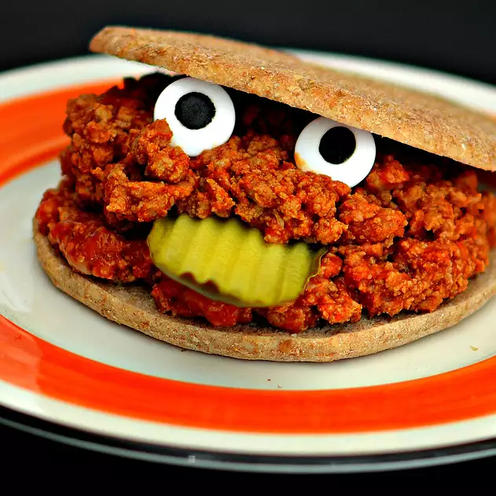

Sloppy Joes

A warm dinner full of memories
By now we all know about sloppy Joes and how incredibly delicious they are,
even though they are indcredibly simple to cook!
Ingredients
- ½ cup chopped onion
- ¼ cup chopped celery
- 2 pounds ground beef
- 7 ounces ketchup
- 1 tablespoon brown sugar
- 1 ½ teaspoons Worcestershire sauce
- 1 teaspoon vinegar
- ¼ teaspoon dry mustard powder
- ⅛ teaspoon lemon juice
- 8 white or wheat hamburger buns
Steps
- Place a large skillet over medium-high heat. Crumble ground beef into skillet; add onion and celery. Cook and stir beef
mixture until beef is completely browned, 7 to 10 minutes.
- Stir ketchup, brown sugar, Worcestershire sauce, vinegar, mustard, and lemon juice through the beef mixture.
Reduce heat to medium-low and cook mixture at a simmer until mixture is hot and sauce has thickened, about 20 minutes.